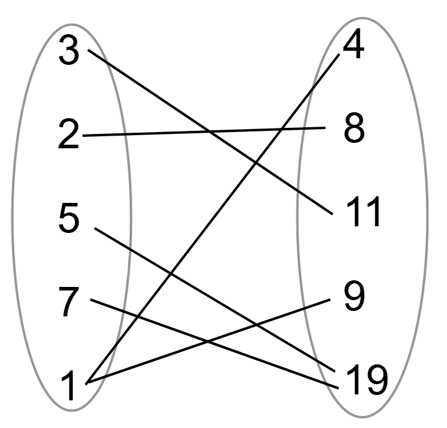

Mathematical Functions
Introductions
Functions in mathematics are a relationship between inputs and outputs…
| X |
Y |
| 1 |
1 |
| 2 |
4 |
| 3 |
9 |
| 4 |
16 |
| 5 |
25 |
| 6 |
36 |
Functions don’t have to be in numerical order…
| X |
Y |
| 0 |
0 |
| 7 |
6 |
| 4 |
3 |
| 6 |
5 |
| 1 |
0 |
| 8 |
7 |
One Rule
Mathematical Functions in math have one rule. That rule is that an input has one output. In other words, an input cannot have multiple outputs…
| X |
Y |
| 0 |
0 |
| 7 |
1 |
| 3 |
2 |
| 7 |
9 |
| 8 |
12 |
| 1 |
0 |
This function has one number (7) that has two separate inputs (1 & 9), therefore this isn’t a function.
Diagram Functions
Functions can also be shown as this…

If a function has a number that has two separate outputs, it is not a function. In this example, when 1 is the input, both 4 and 9 are the outputs which breaks the rule that functions cannot have one input that has multiple outputs.
Types of Mathematical Functions
There are many types of mathematical functions. One common type is linear functions…
f(x) = 3x + 2
Linear Functions
Linear functions are mathematical functions that have an unknown variable (usually with a coefficient) to to the power of 1.
f(x) = 2x + 2
The slope of linear functions is always the coefficient with the variable, the y-intercept is the whole number…
y = 5x - 4
This function has a slope of 5/1 and a y-intercept of -4.
Quadratic Functions
Quadratic Functions are mathematical functions that have an unknown variable (usually with a coefficient) to the power of 2…
x2 + 3x - 5
The coefficient for the squared variable cannot equal zero.
Polynomial Functions
Polynomial functions are functions that contain a coefficient with a variable to a power greater than one like this one…
f(x) = 3x2 + 2x - 1
Finding Missing Inputs and Outputs
For some problems, a piece of the function is missing and you would have to find out that missing piece. This could include inputs and outputs.
Finding Missing Inputs
To find a missing input, you can turn the function into an x = y format...
f(x) = 29
3x - 4
3x - 4 = 29
Now solve the equation like a linear equation...
3x - 4 = 29
3x = 33
x = 11
f(11) = 29
Now if we input 11, we get 29 therefore, x = 11.
Finding Missing Outputs
To find a missing output, substitude x as the input...
f(11) = ???
2x2 + 3x - 2
2(11)2 + 3(11) - 2
242 + 33 - 2
275 - 2
273
f(11) = 273
So when we input 11, we get 273.
Done? Here are other Links
Back to Main Page
Back to Informational
If you are seeing this, your clock is missing a ding-dong
If you are seeing this, your calender needs a pin or two.